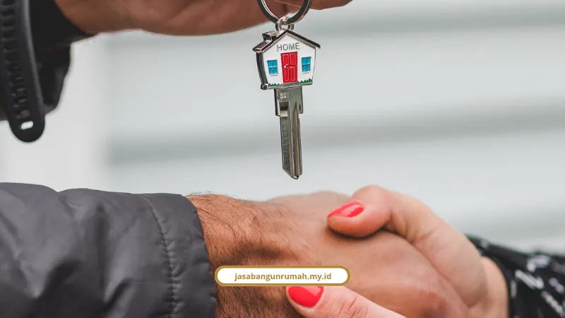

Daftar Isi
- Kenapa Banyak Orang Surabaya Takut Bangun Rumah?
- Tarif Bangun Rumah di Surabaya 2026
- Alur Kerja dari Nol Sampai Terima Kunci
- Kenapa Bata Ringan Lebih Cocok untuk Iklim Surabaya?
- Isi Garansi Struktur 10 Tahun
- Kata Klien yang Sudah Pakai Jasa Kami
- Berapa Lama Waktu Konsultasi Sebelum Mulai Bangun?
- FAQ
Kami adalah jasa konstruksi rumah Surabaya yang menawarkan RAB transparan, alur kerja terjadwal, dan garansi struktur resmi hingga 10 tahun. Semua biaya, tahapan, dan proteksi dijelaskan tuntas di artikel ini.
Kenapa Banyak Orang Surabaya Takut Bangun Rumah?
Jujur saja, saya sering dengar cerita horor soal bangun rumah. Tukang kabur di tengah proyek, material diam-diam diturunkan kualitasnya, atau tiba-tiba anggaran membengkak dua kali lipat dari rencana awal.
Kalau Anda tinggal di Sidoarjo atau Gresik dan sedang mikirin lahan kosong yang belum tergarap, ketakutan semacam itu wajar banget. Apalagi kalau ini rumah pertama, tabungan yang dipakai juga bukan recehan.
Makanya sebelum bicara desain atau gaya rumah impian, hal paling penting justru soal kepercayaan. Siapa yang pegang proyek, apa jaminannya, dan bagaimana kalau ada yang salah di kemudian hari.
Kami berdiri sejak 2010, awalnya cuma biro gambar arsitektur kecil. Sekarang sudah berkembang jadi studio design & build terintegrasi dengan:
- Lebih dari 250+ proyek rumah tinggal, ruko, dan bangunan komersial yang sudah kami selesaikan
- Tingkat kepuasan klien mencapai 98% berdasarkan rekam jejak proyek kami
- Didukung 40+ tim ahli yang terdiri dari arsitek dan insinyur sipil bersertifikat resmi
Berapa Sih Tarif Bangun Rumah di Surabaya Tahun 2026?
Tarif bangun rumah di Surabaya tahun 2026 berkisar Rp 3.000.000 sampai Rp 10.000.000 per meter persegi, tergantung tipe dan spesifikasi material yang dipilih. Berikut rincian yang lebih jelas.
Untuk tipe standar minimalis satu lantai (tipe 36-60), biayanya ada di kisaran Rp 3.000.000 hingga Rp 5.000.000 per m². Ini pilihan paling efisien buat keluarga muda atau yang mau bangun rumah investasi.
Kalau Anda mengincar tipe menengah dua lantai dengan luas 150-200 m², siapkan dana Rp 4.500.000 sampai Rp 6.000.000 per m². Struktur yang dipakai sudah pakai cor dak beton kokoh berstandar SNI.
Sementara untuk tipe mewah atau premium, biayanya bisa Rp 7.000.000 hingga Rp 10.000.000 lebih per m². Ini sudah termasuk opsi material eksklusif seperti marmer, granit alam, sampai fitur smart home.
Supaya nggak kaget di tengah jalan, ini alokasi anggaran yang biasanya kami pakai sebagai acuan:
- Material bangunan: 45% sampai 55% dari total biaya
- Tenaga kerja atau borongan: 25% sampai 35% dari total biaya
- Dana cadangan (buffer tak terduga): sisihkan 10% sampai 15% untuk antisipasi perubahan lapangan atau kendala cuaca
Soal legalitas, kontraktor yang kami maksud di sini juga bukan sembarang tukang lepas. Kalau Anda penasaran soal dasar hukumnya, kami sudah bahas detail di artikel legalitas kami sebagai kontraktor berizin resmi di Surabaya.
Bagaimana Alur Kerja dari Nol Sampai Terima Kunci?
Alur kerja pembangunan rumah kami terbagi dalam lima tahap besar, mulai dari konsultasi awal sampai serah terima kunci. Setiap tahap ada dokumen dan output yang jelas, jadi tidak ada drama di tengah jalan.
Tahap 1: Konsultasi Awal & Survei Lahan. Kami diskusi soal kebutuhan ruang, gaya arsitektur, sampai budget yang Anda punya. Termasuk survei lokasi langsung untuk analisa kontur tanah dan batas lahan.
Tahap 2: Desain Arsitektur, DED & RAB Transparan. Tim kami bikin gambar skematik, denah fungsional, render 3D, sampai dokumen teknis DED. RAB disusun detail berbasis Analisis Harga Satuan Pekerjaan (AHSP) SNI, tanpa ada biaya tersembunyi.
Tahap 3: Legalitas Perizinan (PBG). Kami urus dokumen teknis Persetujuan Bangunan Gedung yang sekarang jadi pengganti resmi IMB, lewat portal SIMBG milik Kementerian PUPR.
Tahap 4: Penandatanganan SPK & Pengerjaan Konstruksi. Surat Perjanjian Kerja bermaterai ditandatangani, lengkap dengan spesifikasi material, jadwal kerja model Kurva-S, dan termin pembayaran. Baru setelah itu masuk pekerjaan pondasi, struktur beton, dinding bata ringan AAC, rangka atap baja ringan, sampai instalasi MEP.
Tahap 5: Finishing, Inspeksi & Serah Terima Kunci. Meliputi acian, pemasangan keramik atau granit, pengecatan, pembersihan area, pengecekan akhir (snagging), sampai penandatanganan Berita Acara Serah Terima.
Kalau Anda punya lahan di area Surabaya Timur yang tanahnya cenderung bergerak, ada baiknya cek dulu pembahasan kami soal solusi pondasi di area tanah gerak sebelum masuk tahap desain. Anda juga bisa melihat tahapan proses kerja kontraktor kami secara lebih rinci.

Kenapa Bata Ringan Lebih Cocok untuk Iklim Surabaya?
Bata ringan AAC lebih cocok untuk Surabaya karena punya insulasi termal yang menahan panas matahari dan bobotnya lebih ringan untuk struktur. Ini penting mengingat suhu Surabaya yang cenderung terik sepanjang tahun.
Beberapa keunggulan teknisnya:
- Insulasi termal dari struktur pori-pori bata ringan bikin suhu ruangan lebih sejuk
- Ukuran presisi dan besar mempercepat pengerjaan dinding, menghemat mortar khusus, dan menipiskan lapisan plesteran
- Beban struktur lebih ringan, meringankan kerja pondasi dan cor dak beton, cocok untuk rumah dua lantai maupun renovasi di lahan padat
Soal pilihan gaya rumah yang cocok dengan iklim ini, kami juga punya pembahasan lengkap di artikel 3 pilihan tipe desain rumah yang kami tawarkan di Surabaya, mulai dari modern tropis sampai industrial urban.
Apa Isi Garansi Struktur 10 Tahun yang Ditawarkan?
Garansi struktur 10 tahun mencakup perlindungan pada fondasi, kolom beton, balok, dan pelat lantai dari potensi pergeseran atau kegagalan konstruksi jangka panjang. Ini garansi tertulis, bukan janji lisan.
Sebelum masuk ke garansi jangka panjang, ada dulu Masa Pemeliharaan (Defect Liability Period) yang berlangsung 3 sampai 6 bulan sejak serah terima kunci pertama. Fokusnya perbaikan cacat minor non-struktural tanpa biaya tambahan, seperti:
- Retak rambut pada dinding
- Cat belang atau tidak rata
- Keramik kopong
- Bocor halus pada instalasi pipa atau atap
Setelah masa pemeliharaan itu, baru masuk Garansi Struktur Jangka Panjang hingga 10 tahun yang melindungi elemen vital bangunan. Ini juga sejalan dengan semangat PP No. 12 Tahun 2021 tentang penyelenggaraan perumahan yang menjamin hak pemeliharaan konsumen.
Apa Kata Klien yang Sudah Pakai Jasa Kami?
Daripada saya yang klaim sendiri, lebih baik dengar langsung dari yang sudah pernah pakai jasa kami. Berikut beberapa testimoni nyata dari klien di berbagai titik Surabaya.
Siti Aminah, pemilik ruko di Surabaya, bilang begini: "Kami sangat terbantu dengan RAB yang transparan sejak awal, tidak ada biaya tak terduga. Renovasi ruko kami selesai lebih cepat dari jadwal."
Ir. Hendra Gunawan yang tinggal di Pakuwon City, Surabaya Timur, punya pengalaman serupa: "Hasil bangun rumah 2 lantai di Surabaya Timur sangat memuaskan, cor beton presisi, RAB transparan tanpa biaya siluman, dan serah terima kunci tepat waktu."
Sementara dr. Sylvia Anggraeni di Graha Famili, Surabaya Barat, menyoroti sisi pengawasan: "Pembangunan rumah tinggal minimalis tropis diawasi langsung oleh tim insinyur sipil. Komunikasi laporan kurva-S harian sangat profesional dan transparan."
Berapa Lama Waktu Konsultasi Sebelum Mulai Bangun?
Konsultasi awal biasanya bisa dijadwalkan dalam hitungan hari setelah Anda menghubungi tim kami, tanpa dipungut biaya di tahap awal. Ini termasuk diskusi kebutuhan ruang dan survei lokasi untuk cek kondisi lahan.
Setelah konsultasi, baru masuk proses desain dan penyusunan RAB yang butuh waktu sesuai kompleksitas proyek. Semakin detail kebutuhan Anda, semakin akurat juga estimasi waktu dan biayanya.
Saatnya Bangun Rumah Tanpa Drama
Bangun rumah itu investasi besar, jadi wajar kalau Anda mau segala sesuatunya jelas dari awal. Mulai dari tarif per meter persegi, alur kerja lima tahap, sampai garansi struktur 10 tahun yang kami tawarkan bukan sekadar formalitas.
Kalau Anda sudah punya lahan di Surabaya, Sidoarjo, atau Gresik dan siap mulai, silakan konsultasikan kebutuhan Anda lewat halaman jasa kontraktor rumah kami. Tim arsitek dan insinyur kami siap bantu dari gambar sampai serah terima kunci.